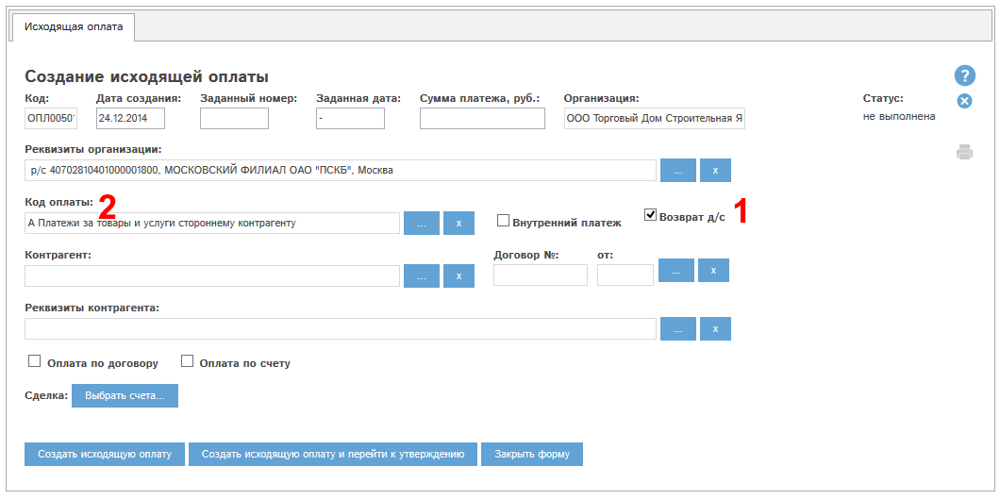
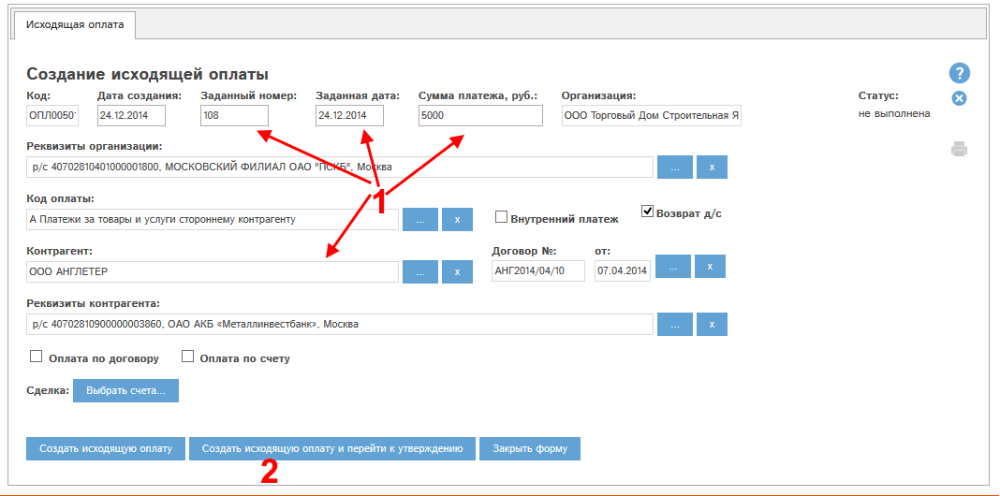
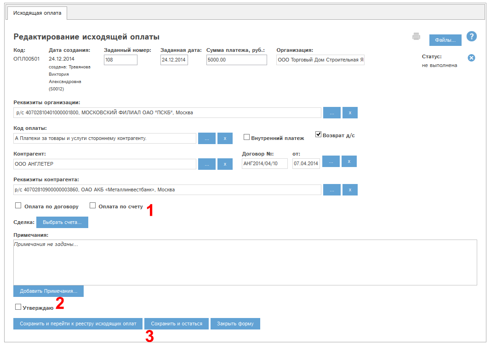
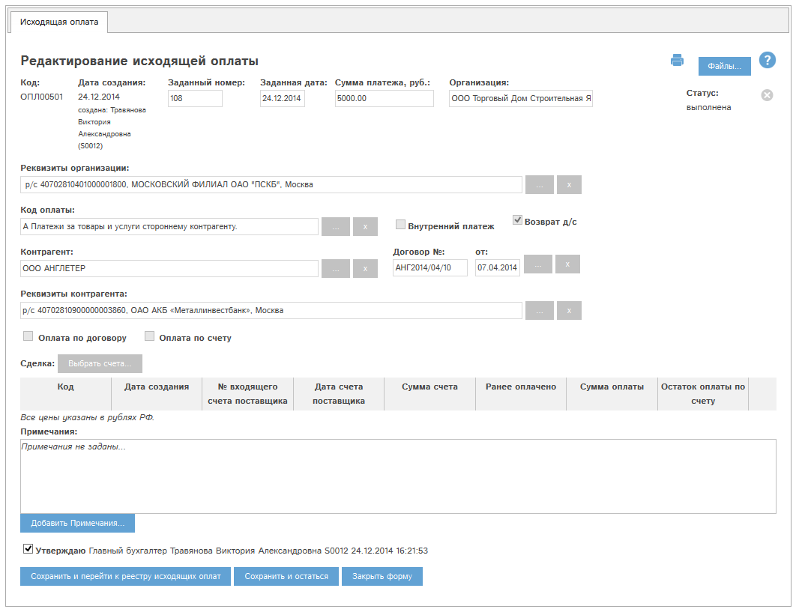

В программе "Мобильный офис" доступна возможность проведения исходящей оплаты - возврата денежных средств контрагенту.
Для проведения возврата д/с контрагенту необходимо создать исходящую оплату. При создании оплаты нужно отметить в ней галочку "возврат д/с":

Рис. Создание исходящей оплаты в режиме возврата д/с.
При простановке галочки "Возврат д/с" автоматически выбирается код оплаты "А. Платежи за товары и услуги стороннему контрагенту".
Выберем контрагента, укажем сумму платежа, заданные дату и номер исходящей оплаты (1):

Рис. Исходящая оплата готова к созданию.
При выборе контрагента в оплату будут автоматически подставлены его основной входящий договор и основные реквизиты. Для их изменения нажмите кнопку "..." в соответствующем блоке, выберите в справочнике необходимые данные и нажмите Готово в окне справочника.
Нажмем кнопку "Создать исходящую оплату и перейти к утверждению" (2). Откроется окно редактирования созданной оплаты:

Рис. Окно редактирования исходящей оплаты.
В режиме возврата д/с контрагенту к исходящей оплате можно прикреплять входящие счета. Прикрепление исходящих счетов и выбор одного из режимов : "Оплата по договору", либо "Оплата по счету" (1) не являются обязательным для утверждения исходящей оплаты в этом режиме.
Утвердим оплату. Для этого отметим галочку "Утверждаю" (2) и нажмем "Сохранить и остаться" (3). Окно оплаты примет следующий вид:

Рис. Исходящая оплата утверждена.
Исходящая оплата переходит в статус "Выполнена" и становится доступна во всех отчетах программы.